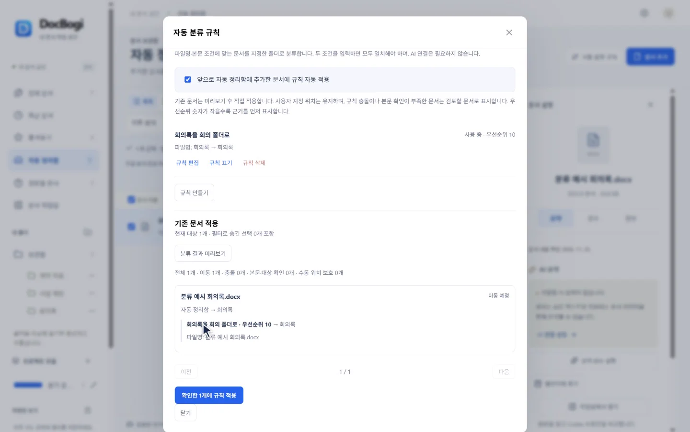
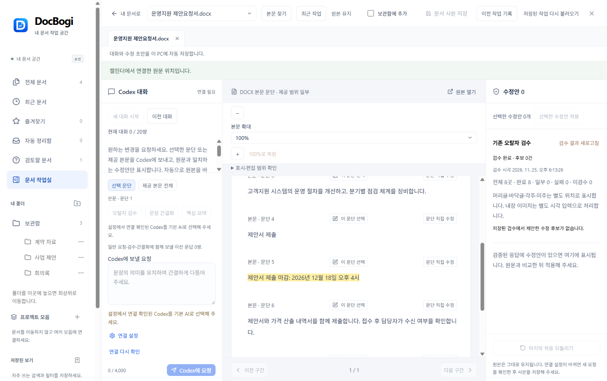
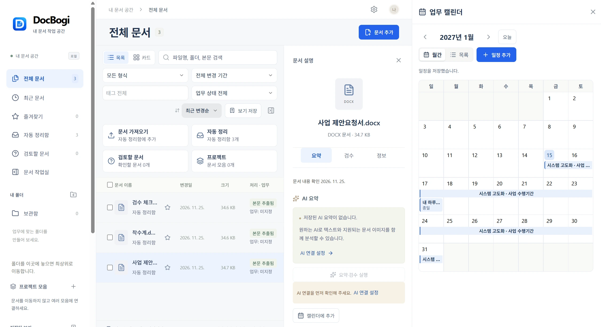
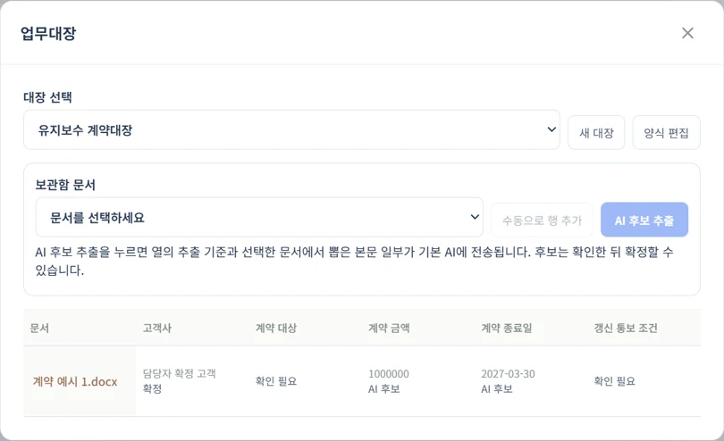
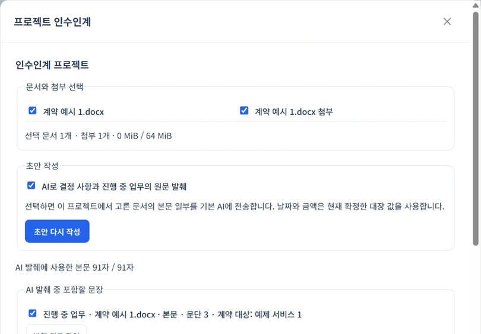

파일명이 기억나지 않아도
PDF, Word, PowerPoint, Excel, 한글 문서를 가져오세요. 저장한 폴더나 파일명이 기억나지 않아도 본문에 있는 단어로 찾을 수 있습니다.

내 PC의 업무 문서 보관함
파일명이 기억나지 않아도 본문으로 찾으세요. AI를 연결하면 옮길 폴더를 미리 보고, 요약을 원문과 대조할 수 있습니다.
v1.1.4 사용 가이드 SHA-256 확인
분류 미리보기 보관함 / 교육·행사
온보딩 워크숍 운영안.docx 1쪽
신규 입사자 온보딩 워크숍은 2026년 12월 8일부터 10일까지 진행합니다. 인사팀은 12월 4일까지 참가자 명단을 확정합니다.
업무 캘린더 2026년 12월
연결 문서
업무 흐름
DocBogi의 실제 화면으로 살펴보세요.
PDF, Word, PowerPoint, Excel, 한글 문서를 가져오세요. 저장한 폴더나 파일명이 기억나지 않아도 본문에 있는 단어로 찾을 수 있습니다.
자동 정리함에서 분류 규칙을 적용하기 전에 문서별 이동 위치를 확인할 수 있습니다. 처리 현황에서 대기 중이거나 실패한 작업도 확인하세요.

AI를 연결하면 요약과 오탈자 후보를 확인할 수 있습니다. 문서 작업실에서 근거 문장을 찾아 읽고, 지원되는 문서를 고쳐 같은 형식의 사본으로 저장하세요.

시작일과 종료일을 입력하거나 원문의 날짜 후보를 확인해 저장하세요. 넓은 창에서는 문서 옆에 캘린더를 열어 두고, 일정에 연결한 문서를 바로 열 수 있습니다.

실무 활용

프로젝트 모음
프로젝트 모음에 관련 문서를 모으고, 확정한 대장 값과 승인한 원문 인용, 메모를 첨부와 함께 ZIP으로 저장하세요.
인수인계 사용법
다운로드 · v1.1.4
공식 릴리스에서 파일의 SHA-256을 대조할 수 있습니다.
x64 · EXE
EXE를 열고 설치 마법사를 따라 진행하세요. 게시자 서명이 없어 SmartScreen 안내가 표시될 수 있습니다.
Windows 설치 파일Apple Silicon 및 Intel · Universal DMG
DMG를 열고 DocBogi를 응용 프로그램 폴더로 옮기세요. 이 배포본은 임시 서명되어 있으며 Apple 공증을 받지 않았습니다.
macOS 설치 파일Windows에서는 SmartScreen 안내가 표시될 수 있습니다. macOS 앱은 임시 서명으로 배포되며 Apple 공증을 받지 않았습니다. 공식 릴리스의 SHA-256과 파일을 대조하고 사용 가이드의 설치 단계를 확인하세요. 설치 안내
가져온 문서는 내 PC에서 고른 보관함에 복사됩니다. AI로 분석할 때는 작업에 필요한 추출 텍스트와 지원되는 페이지 또는 내장 이미지가 연결한 제공자에게 전송됩니다.
문서를 가져오고 폴더에 정리하거나 파일명과 추출 본문으로 검색할 수 있습니다. 작업실에서 직접 고쳐 사본을 저장할 수도 있습니다. AI 요약·검수, 자동 분류, 문서에 질문하는 기능을 쓰려면 제공자를 연결하세요.
HWP 5·HWPX, XLSX·XLS를 비롯해 PDF, DOCX, PPTX를 가져올 수 있습니다. 파일에 따라 작업실에서 본문이나 텍스트 셀을 수정할 수 있고, PDF에는 하이라이트와 메모를 추가할 수 있습니다. 형식별 범위는 사용 가이드에서 확인하세요. 지원 파일 보기